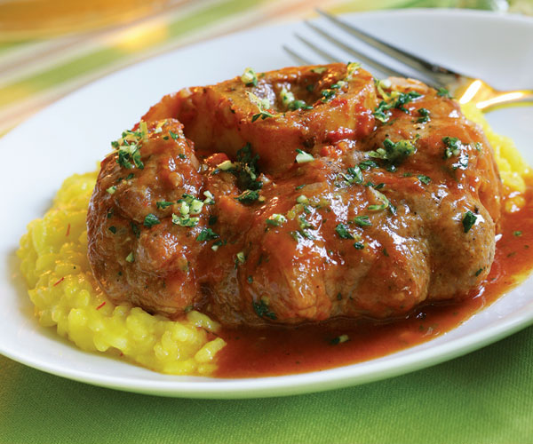

Back to Main page
Osso Bucco

Yields 6 servings
This classic braised veal from northern Italy is the world’s best make-ahead dish—it tastes amazing on the second day. The classic accompaniment is saffron-scented Risotto alla Milanese.
Recipe Ingredients
- 6 1-1/4 inch-thick veal shanks
- Kosher salt and freshly ground black pepper
- Kosher salt and freshly ground black pepper
- 1/2 cup all-purpose flour for dredging
- 1/4 cup extra-virgin olive oil
- 1 Tbs. unsalted butter
- 3 cups finely diced yellow onion (about 2 medium onions)
- 1 cup finely diced celery (about 2 stalks)
- 3/4 cup finely diced carrot (about 2 small carrots)
- 1 tsp. dried oregano
- 3/4 cup dry white wine
- 2 Tbs. tomato paste
- 1 28-oz. can Italian plum tomatoes, drained and chopped, juices reserved
- 1 cup low-salt chicken broth, more if needed
- 1 large sprig thyme
- 1 bay leaf
- 1 Tbs. arrowroot mixed with 2 tsp. broth or water
For the Gremolata:
- 3 Tbs. finely chopped fresh flat-leaf parsley
- 2 large cloves garlic, minced
- 1 Tbs. finely grated lemon zest
- 2 anchovy fillets, minced
Recipe Directions
- Heat the oven to 350°F.
- Tie the veal shanks around the middle with kitchen string (if they’re not tied already) and season them with salt and pepper. Put the flour in a dish. Dredge the shanks very lightly in flour, thoroughly shaking off the excess.
- Have ready a roasting pan or baking dish large enough to hold the shanks in a single layer (9×13-inch works well). In a large heavy skillet, heat 3 Tbs. of the oil over medium-high heat. Put three veal shanks in the pan and sear until nicely browned on both sides, 2 to 3 minutes per side. Move the shanks to the roasting pan. Repeat with the remaining three shanks.
- Carefully pour off the fat in the pan and wipe it out with paper towels (it’s fine if the browned bits remain in the pan bottom; just wipe away the used oil). Return the pan to medium heat and add the butter and remaining 1 Tbs. of oil.
- When the butter is melted, add the onion, celery, carrot, oregano, and 1 tsp. salt. Cook the vegetables, stirring occasionally, until soft and lightly browned, 15 to 20 minutes.
- Increase the heat to medium-high, add the wine, and cook, scraping up any brown bits with a wooden spoon, until the wine is reduced to about 1/4 cup, about 3 minutes
- Stir in the tomato paste. Add the tomatoes with their juices, the broth, thyme, bay leaf, 1/2 tsp. salt, and a few grinds of pepper. Bring to a boil, and pour the contents of the pan over the shanks. Cover tightly with heavy-duty aluminum foil.
- Braise the veal in the oven until fork-tender, 1-1/2 to 2 hours, checking the liquid occasionally. If it has cooked down, add enough broth to keep the level about halfway up the shanks. To check for doneness, pierce a shank with a fork. The meat should pull apart easily. Taste a morsel—it should feel soft and tender. Do not overcook, or the veal will fall apart.
- Gently brush most of the vegetable bits off the shanks. With a wide, flat metal spatula, carefully transfer the veal shanks to a dish. Strain the pan juices through a medium-mesh sieve into a saucepan, pressing hard on the solids with a spatula to extract as much sauce as you can. Bring the sauce to a simmer. Whisk in the arrowroot mixture and cook briefly to thicken.
Make the Gremolata:
- Just before finishing the sauce and serving, combine the parsley, garlic, lemon zest, and anchovies. Add two Tbs. of the gremolata to the sauce. Remove the strings from the shanks. Serve the osso buco topped with the sauce and a small sprinkling of the remaining gremolata.